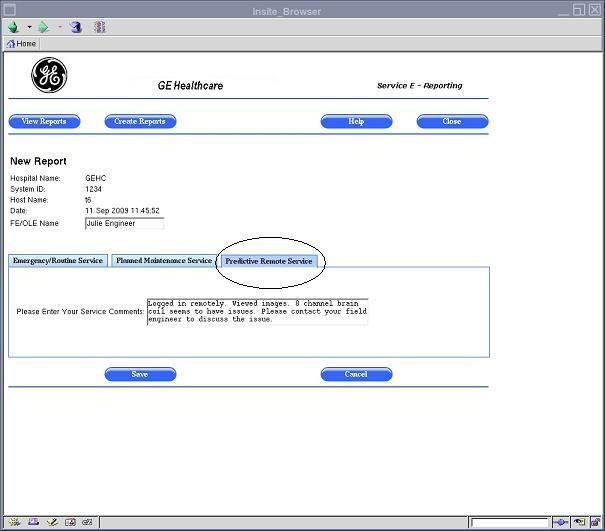

- 00000018WIA3064CF20GYZ
- id_131068981.3
- Jul 5, 2019 11:18:59 PM
E-Reporting Tool
Prerequisites
| Required persons | Preliminary requirements | Procedure | Finalization |
|---|---|---|---|
| 1 | Not Applicable | Not Applicable | Not Applicable |
About this task
This document only covers features and access for the Field Engineer and Online Engineer. For operator access to this tool, please refer to the Operator Manual.
The E-Reporting Tool is a web-based application that allows for better communication between the customer and the GE service engineer. Communication is one-way with this tool from the service engineer to the customer. When a Field Engineer (FE) or Online Engineer (OLE) provides service at a customer site, the E-Reporting Tool is used to document issues found or service performed. It is also used to provide recommendations for customer follow-up, for example, suggesting that the customer improve room temperature. After the service engineer has created a service report, the customer can view and print the report at any time.
There are three types of reports in the E-Reporting Tool:
-
Emergency and Routine Service Report - (The Field Engineer primarily uses this page to communicate to the customer any information from emergency or routine service calls.) This report is created, for example, when an FE or OLE is called onsite to resolve an emergency site issue and wants to maintain a log of the discussion that occurred between site personnel and the engineer. The service engineer is also able to communicate with the customer about work that was done after hours at that site.
-
Planned Maintenance Service Report - (The Field Engineer primarily uses this page to communicate to the customer any PM information from planned maintenance service calls.) An FE or OLE may create this report to communicate to site personnel about the details of planned maintenance that was performed onsite by GE. The report could also contain any site-related issues that the customer should correct or that GE needs to fix.
-
Predictive Maintenance Service Report - (The OnLine Center primarily uses this page to communicate to the customer any information from predictive maintenance service calls.) This report may be created by an FE or OLE when performing proactive work to remedy a problem that will occur onsite if site conditions are not corrected. This may involve site-related issues that could impact product performance. Examples include temperature and humidity that is out of specification, or MCQA results that indicate a problem with site coils.
Notice
In addition to viewing service reports, these reports can be exported to media, such as DVD, CD, or USB drive. Each service report includes the hospital name, system ID, system name, and the date it was generated. Service reports for the last three years are maintained on the system. Reports older than three years are automatically deleted.
Opening the E-Reporting Tool
Procedure
- Click the E-Reporting link on the FE
Cockpit Home Page (see Figure 1). The E-Reporting View Service
Reports page is displayed (see Figure 2).
Figure 2. View Service Reports Page 
By default, the E-Reporting View Service Reports page is displayed for the Field Engineer or Online Engineer with several options for viewing, editing, deleting, and creating reports.
Viewing a List of Service Reports
About this task
When the E-Reporting Tool is opened, a list of reports automatically displays (for reports that were already created).
Procedure
- Open the View Service Reports page (see Opening the E-Reporting Tool).
- A list of Unread reports is shown at the top of the page, and a list of Read reports is shown at the bottom of the page. When a service engineer creates a report, it goes to the Unread list. When a customer opens the report, it moves to the Read list (see Figure 2).
Viewing a Specific Service Report
About this task
A service engineer can view a particular report by clicking the View link for that report.
Procedure
- Click the View link for the report you want to view (see Figure 3). The corresponding report is displayed (see Figure 4).
Figure 3. Selecting the View Link 
Figure 4. Viewing a Service Report  Note:
Note:To return to the list of reports, click the View Reports button at the top of the page. You can also go back to the list of reports by clicking the Cancel button.
Creating Service Reports
About this task
To create each of the three service reports, see the procedures below.
Creating an Emergency/Routine Service Report
About this task
A service engineer can create an Emergency/Routine Service Report. This report contains the information shown in Figure 5.
Procedure
Creating a Planned Maintenance Service Report
About this task
A service engineer can create a Planned Maintenance Service Report. This report contains the information shown in Figure 7.

Procedure
Creating a Predictive Maintenance Service Report
About this task
A service engineer can create a Predictive Maintenance Service Report. This report contains the information shown in Figure 8.

Procedure
- Open the View Service Reports page (see Opening the E-Reporting Tool).
- Click the Create Reports button at the top of the page (see Figure 5).
- Click the Predictive Remote Service tab to create this type of report (see Figure 8).
- Enter service comments for the report.
- Click the Save button at the bottom of the page.
Printing a Service Report
About this task
A service engineer can print a specific report by opening it and printing it. The service report is displayed as a PDF file for printing purposes. The report is printed using either the:
-
XPDF tool on the local system, which is a Linux version of PDF, or
-
Adobe Acrobat when accessed remotely through the Integrated Service Desktop (ISD)
Procedure
- Click the View link for the report you want to print (see Figure 9). The corresponding report is displayed in the View Report page
(see Figure 10).
Figure 9. Viewing a Service Report in Order to Print It - Click the Print button at the bottom of the View Report page
(see Figure 10).
Figure 10. Printing a Service Report 
- If you print locally from the system, an XPDF page displays
(see Figure 11 ). Click the Printer icon in the toolbar at the bottom
of the XPDF page to print.
Figure 11. Printing Locally with the XPDF Tool 
Editing a Service Report
About this task
A service engineer can edit a specific report by clicking the Edit link for that report. An FE can edit only an unread report.
Procedure

Adding Comments to a Service Report
About this task
A service engineer can add comments to a specific report by clicking the Add Comments link for that report. An FE can only add comments to a read report. After adding the comments, the report is moved to the "Unread" section.
Procedure

Exporting Service Reports to Media (in PDF Format)
About this task
A service engineer can export a report to media, such CD, DVD, or USB drive. The report is exported as a PDF file.
Procedure

Deleting a Service Report
About this task
A service engineer can delete a specific report by clicking the Delete link for that report. An FE can delete only an unread report.
Procedure
- Click the Delete link for the report
you want to delete (see Figure 20).
Figure 20. Selecting the Delete Link 
A dialog box is displayed, asking “Do you want to Delete this report?”
Finalization
Finalization
No finalization steps.